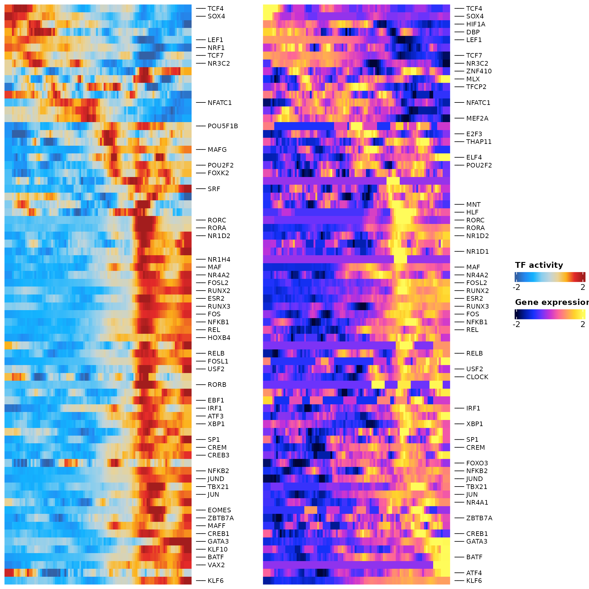
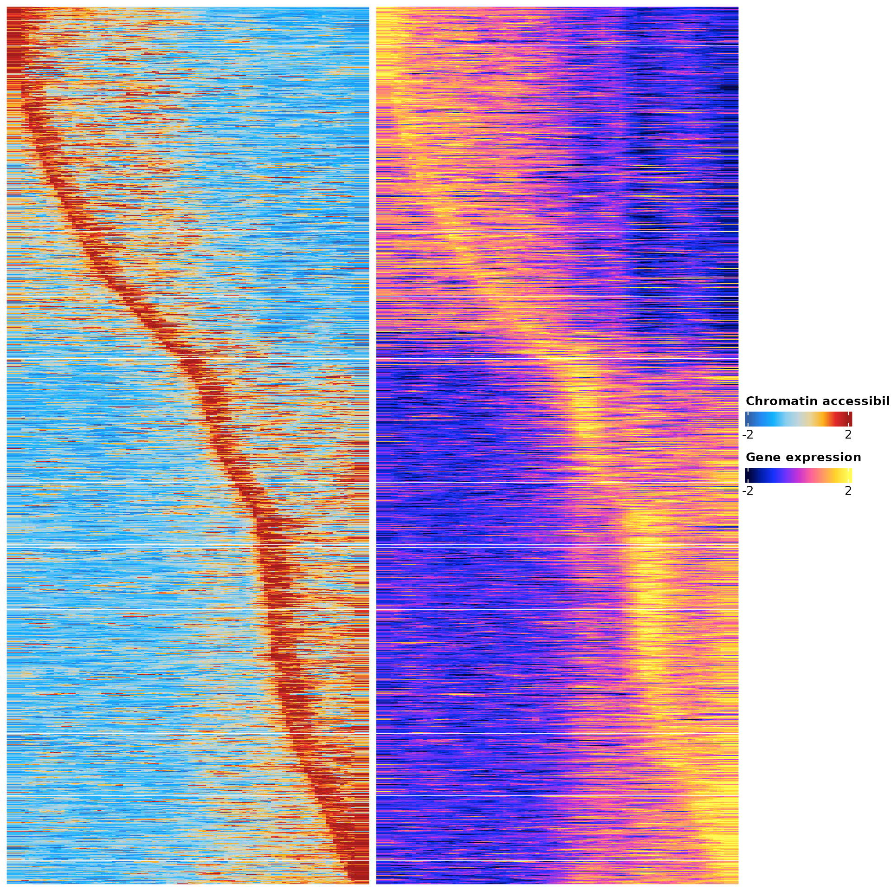

Gene-regulatory network of CD4 T cells activaction
Compiled: December 01, 2022
pbmc_10x_multiome.RmdIn this tutorial, we’ll demonstrate how to infer gene regulatory network using single-cell multimodal data which measures gene expression and chromatin accessibility profiles from the same single cells. We will use a publicly available 10x Genomic Multiome data set for human PBMCs.
We first download the required data.
Run the following commands to download the data:
mkdir -p 10x_pbmc
wget -q -P 10x_pbmc https://cf.10xgenomics.com/samples/cell-arc/2.0.0/pbmc_granulocyte_sorted_10k/pbmc_granulocyte_sorted_10k_atac_fragments.tsv.gz
wget -q -P 10x_pbmc https://cf.10xgenomics.com/samples/cell-arc/2.0.0/pbmc_granulocyte_sorted_10k/pbmc_granulocyte_sorted_10k_atac_fragments.tsv.gz.tbi
wget -q -P 10x_pbmc https://cf.10xgenomics.com/samples/cell-arc/2.0.0/pbmc_granulocyte_sorted_10k/pbmc_granulocyte_sorted_10k_filtered_feature_bc_matrix.h5Next, we load all necessary packages:
suppressMessages(library(ArchR))
suppressMessages(library(Seurat))
suppressMessages(library(Signac))
suppressMessages(library(scMEGA))
suppressMessages(library(Nebulosa))
suppressMessages(library(BSgenome.Hsapiens.UCSC.hg38))
suppressMessages(library(GenomeInfoDb))
suppressMessages(library(EnsDb.Hsapiens.v86))
suppressMessages(library(ggplot2))
suppressMessages(library(dplyr))
suppressMessages(library(JASPAR2020))
suppressMessages(library(TFBSTools))
suppressMessages(library(igraph))
suppressMessages(library(ggraph))
suppressMessages(library(MOJITOO))Data pre-processing
Let’s load the data into memory and extract scRNA and scATAC-seq data:
inputdata.10x <- Read10X_h5("./10x_pbmc/pbmc_granulocyte_sorted_10k_filtered_feature_bc_matrix.h5")## Genome matrix has multiple modalities, returning a list of matrices for this genome
# extract RNA and ATAC data
rna_counts <- inputdata.10x$`Gene Expression`
atac_counts <- inputdata.10x$Peaks
# filter peaks by chromosome
atac_counts <- atac_counts[grep("chr", rownames(atac_counts)), ]Next create a Seurat object and filter low-quality cells in scRNA-seq data
obj.rna <- CreateSeuratObject(counts = rna_counts)
obj.rna[["percent.mt"]] <- PercentageFeatureSet(obj.rna, pattern = "^MT-")We can visualize the data quality
# Visualize QC metrics as a violin plot
VlnPlot(obj.rna, features = c("nFeature_RNA", "nCount_RNA", "percent.mt"), ncol = 3, pt.size = 0)
obj.rna <- subset(obj.rna, subset = nFeature_RNA > 200 & nFeature_RNA < 3000 & percent.mt < 20)
obj.rna## An object of class Seurat
## 36601 features across 10504 samples within 1 assay
## Active assay: RNA (36601 features, 0 variable features)Create Seurat object for scATAC-seq data:
# create seurat object
chrom_assay <- CreateChromatinAssay(
counts = atac_counts,
sep = c(":", "-"),
min.cells = 1,
genome = 'hg38',
fragments = './10x_pbmc/pbmc_granulocyte_sorted_10k_atac_fragments.tsv.gz'
)## Computing hash
obj.atac <- CreateSeuratObject(
counts = chrom_assay,
assay = "ATAC")## Warning: Keys should be one or more alphanumeric characters followed by an
## underscore, setting key from atac to atac_
# extract gene annotations from EnsDb
annotations <- suppressWarnings(GetGRangesFromEnsDb(ensdb = EnsDb.Hsapiens.v86, verbose = FALSE))
# change to UCSC style since the data was mapped to hg38
seqlevelsStyle(annotations) <- 'UCSC'
# add the gene information to the object
Annotation(obj.atac) <- annotationsMake sure that the two modalities have the same cells:
cell.sel <- intersect(colnames(obj.rna), colnames(obj.atac))
obj.rna <- obj.rna[, cell.sel]
obj.atac <- obj.atac[, cell.sel]We next process the scRNA-seq and scATAC-seq data using standard Seurat and Signac analysis pipeline:
# normalization followed by dimensionality reduction
obj.rna <- obj.rna %>%
SCTransform(verbose = FALSE) %>%
RunPCA(verbose = FALSE) %>%
RunUMAP(dims = 1:30, verbose = FALSE)## Warning: The default method for RunUMAP has changed from calling Python UMAP via reticulate to the R-native UWOT using the cosine metric
## To use Python UMAP via reticulate, set umap.method to 'umap-learn' and metric to 'correlation'
## This message will be shown once per session
obj.atac <- obj.atac %>%
RunTFIDF() %>%
FindTopFeatures() %>%
RunSVD() %>%
RunUMAP(reduction = 'lsi', dims = 2:30, verbose = FALSE)## Performing TF-IDF normalization## Running SVD## Scaling cell embeddingsVisualize the scRNA-seq and scATAC-seq separately.

Cell type annotation
We next will annotate the cell types in our multimodal data via label transfer approach implemented by Seurat. The reference dataset is found here
Download data
wget -q -P 10x_pbmc ftp://ftp.ebi.ac.uk/pub/databases/mofa/10x_rna_atac_vignette/seurat.rdsLoad data
reference <- readRDS("./10x_pbmc/seurat.rds")
# we only keep cells with annotated cell type
reference <- reference[, reference$celltype != "NA"]
# run sctransform
reference <- reference %>%
SCTransform(verbose = FALSE) %>%
RunPCA(verbose = FALSE) %>%
RunUMAP(dims = 1:30, verbose = FALSE)
p1 <- DimPlot(reference, label = TRUE, repel = TRUE,
reduction = "umap", group.by = "broad_celltype") + NoLegend()
p2 <- DimPlot(reference, label = TRUE, repel = TRUE,
reduction = "umap", group.by = "celltype") + NoLegend()
p1 + p2
Transfer cell type labels from reference to query:
transfer_anchors <- FindTransferAnchors(
reference = reference,
query = obj.rna,
normalization.method = "SCT",
reference.reduction = "pca",
dims = 1:30
)## Normalizing query using reference SCT model## Projecting cell embeddings## Finding neighborhoods## Finding anchors## Found 28714 anchors
predictions <- TransferData(
anchorset = transfer_anchors,
refdata = reference$celltype,
weight.reduction = obj.rna[['pca']],
dims = 1:30
)## Finding integration vectors## Finding integration vector weights## Predicting cell labels
obj.rna <- AddMetaData(
object = obj.rna,
metadata = predictions
)
obj.atac <- AddMetaData(
object = obj.atac,
metadata = predictions
)Visualize the predicted cell types:
p1 <- DimPlot(obj.rna, label = TRUE, repel = TRUE,
reduction = "umap", group.by = "predicted.id") + NoLegend()
p2 <- DimPlot(obj.atac, label = TRUE, repel = TRUE,
reduction = "umap", group.by = "predicted.id") + NoLegend()
p1 + p2
Integration of multimodal single-cell data using MOJITOO
We next need to project the cells into a low-dimensional space. Here we can use MOJITOO to do this job.
Let’s first create a single Seurat object including both modalities and predicted cell types that we generated in the above step:
meta.data <- obj.rna@meta.data %>%
as.data.frame()
# create a Seurat object containing the RNA adata
pbmc <- CreateSeuratObject(
counts = obj.rna@assays$RNA@counts,
assay = "RNA",
meta.data = meta.data
)
# create ATAC assay and add it to the object
pbmc[["ATAC"]] <- CreateChromatinAssay(
counts = obj.atac@assays$ATAC@counts,
sep = c(":", "-"),
min.cells = 1,
genome = 'hg38',
fragments = './10x_pbmc/pbmc_granulocyte_sorted_10k_atac_fragments.tsv.gz'
)## Computing hashMOJITOO takes as input the individual low-dimensional space for each modality, so here we do this again:
## RNA pre-processing and PCA dimension reduction
DefaultAssay(pbmc) <- "RNA"
pbmc <- pbmc %>%
NormalizeData(verbose=F) %>%
FindVariableFeatures(nfeatures=3000, verbose=F) %>%
ScaleData(verbose=F) %>%
RunPCA(npcs=50, reduction.name="RNA_PCA", verbose=F)
## ATAC pre-processing and LSI dimension reduction
DefaultAssay(pbmc) <- "ATAC"
pbmc <- pbmc %>%
RunTFIDF(verbose=F) %>%
FindTopFeatures(min.cutoff = 'q0', verbose=F) %>%
RunSVD(verbose=F)Run MOJITOO:
pbmc <- mojitoo(
object = pbmc,
reduction.list = list("RNA_PCA", "lsi"),
dims.list = list(1:50, 2:50), ## exclude 1st dimension of LSI
reduction.name = 'MOJITOO',
assay = "RNA"
)## processing RNA_PCA## adding lsi## 1 round cc 45## Warning: Keys should be one or more alphanumeric characters followed by an
## underscore, setting key from MOJITOO to MOJITOO_## Warning: All keys should be one or more alphanumeric characters followed by an
## underscore '_', setting key to MOJITOO_We can generate another UMAP representation based on the MOJITOO results:
DefaultAssay(pbmc) <- "RNA"
embedd <- Embeddings(pbmc[["MOJITOO"]])
pbmc <- RunUMAP(pbmc,
reduction="MOJITOO",
reduction.name="MOJITOO_UMAP",
dims=1:ncol(embedd), verbose=F)
DimPlot(pbmc, group.by = "predicted.id",
shuffle = TRUE, label = TRUE, reduction = "MOJITOO_UMAP") + NoLegend()
Trajectory analysis
We next infer a trajectory from naive CD4 T cells to memory CD4 T cells to characterize CD4+ T cell activation.
pbmc <- AddTrajectory(object = pbmc,
trajectory = c("naive CD4 T cells",
"memory CD4 T cells"),
group.by = "predicted.id",
reduction = "MOJITOO_UMAP",
dims = 1:2,
use.all = FALSE)
# we only plot the cells that are in this trajectory
pbmc.t.cells <- pbmc[, !is.na(pbmc$Trajectory)]The results can be visualized as:
p1 <- DimPlot(object = pbmc.t.cells,
group.by = "predicted.id",
reduction = "MOJITOO_UMAP",
label = TRUE) + NoLegend()
p2 <- TrajectoryPlot(object = pbmc.t.cells,
reduction = "MOJITOO_UMAP",
continuousSet = "blueYellow",
size = 1,
addArrow = FALSE)
p1 + p2
TF and gene selection
We next select candidate TFs and genes for building a meaningful gene regulatory network.
Select TFs
To identify potential regulator (i.e., TFs), we first estimate an acitivty score for each TF in each cell. This is done by first performing motif matching and then computing deviation scores using chromVAR.
# Get a list of motif position frequency matrices from the JASPAR database
pfm <- getMatrixSet(
x = JASPAR2020,
opts = list(collection = "CORE", tax_group = 'vertebrates', all_versions = FALSE)
)
# add motif information
pbmc.t.cells <- AddMotifs(
object = pbmc.t.cells,
genome = BSgenome.Hsapiens.UCSC.hg38,
pfm = pfm,
assay = "ATAC"
)## Building motif matrix## Finding motif positions## Creating Motif object
# run chromVAR
pbmc.t.cells <- RunChromVAR(
object = pbmc.t.cells,
genome = BSgenome.Hsapiens.UCSC.hg38,
assay = "ATAC"
)## Computing GC bias per region## Selecting background regions## Computing deviations from background## Constructing chromVAR assay
sel.tfs <- SelectTFs(object = pbmc.t.cells,
return.heatmap = TRUE,
cor.cutoff = 0.4)## Find 559 shared features!
df.cor <- sel.tfs$tfs
ht <- sel.tfs$heatmap
draw(ht)
Select genes
sel.genes <- SelectGenes(object = pbmc.t.cells,
labelTop1 = 0,
labelTop2 = 0)## Creating Trajectory Group Matrix..## Smoothing...## Creating Trajectory Group Matrix..## Smoothing...## Linking cis-regulatory elements to genes...
df.p2g <- sel.genes$p2g
ht <- sel.genes$heatmap
draw(ht)
Gene regulatory network inference and visualization
We here will try to predict a gene regulatory network based on the correlation of the TF binding activity as estimated from snATAC-seq and gene expression as measured by snRNA-seq along the trajectory.
tf.gene.cor <- GetTFGeneCorrelation(object = pbmc.t.cells,
tf.use = df.cor$tfs,
gene.use = unique(df.p2g$gene),
tf.assay = "chromvar",
gene.assay = "RNA",
trajectory.name = "Trajectory")## Creating Trajectory Group Matrix..## Some values are below 0, this could be the Motif activity matrix in which scaleTo should be set = NULL.
## Continuing without depth normalization!## Smoothing...## Creating Trajectory Group Matrix..## Smoothing...We can then visualize this correlation matrix by heatmap. Also, we can cluster the genes and TFs to identify different regulatory modules for the predefined sub-populations.
ht <- GRNHeatmap(tf.gene.cor,
tf.timepoint = df.cor$time_point)## `use_raster` is automatically set to TRUE for a matrix with more than
## 2000 rows. You can control `use_raster` argument by explicitly setting
## TRUE/FALSE to it.
##
## Set `ht_opt$message = FALSE` to turn off this message.
ht
To associate genes to TFs, we will use the peak-to-gene links and TF binding sites information. Specifically, if a gene is regulated by a peak and this peak is bound by a TF, then we consider this gene to be a target of this TF.
motif.matching <- pbmc.t.cells@assays$ATAC@motifs@data
colnames(motif.matching) <- pbmc.t.cells@assays$ATAC@motifs@motif.names
motif.matching <-
motif.matching[unique(df.p2g$peak), unique(tf.gene.cor$tf)]
df.grn <- GetGRN(motif.matching = motif.matching,
df.cor = tf.gene.cor,
df.p2g = df.p2g)## Filtering network by peak-to-gene links...## Filtering network by TF binding site prediction...Finally, we can visualize our network as the last step of this analysis
# define colors for nodes representing TFs (i.e., regulators)
df.cor <- df.cor[order(df.cor$time_point), ]
tfs.timepoint <- df.cor$time_point
names(tfs.timepoint) <- df.cor$tfs
# plot the graph, here we can highlight some genes
df.grn2 <- df.grn %>%
subset(correlation > 0.5) %>%
select(c(tf, gene, correlation)) %>%
rename(weights = correlation)
p <- GRNPlot(df.grn2,
tfs.timepoint = tfs.timepoint,
show.tf.labels = TRUE,
seed = 42,
plot.importance = FALSE,
min.importance = 2,
remove.isolated = FALSE)
print(p)## Warning: Using alpha for a discrete variable is not advised.GRN visualization
Once we generated the gene regulatory network, we can visualize individual TFs in terms of binding activity, expression, and target expression along the pseudotime trajectory.
Here we select two TFs for visualization.
pbmc.t.cells <- AddTargetAssay(object = pbmc.t.cells, df.grn = df.grn2)## Warning in if (is.na(df.grn)) {: the condition has length > 1 and only the first
## element will be used
p1 <- PseudotimePlot(object = pbmc.t.cells, tf.use = "SOX4")
p2 <- PseudotimePlot(object = pbmc.t.cells, tf.use = "TBX21")
p1 + p2## `geom_smooth()` using formula = 'y ~ x'
## `geom_smooth()` using formula = 'y ~ x'
The x-axis in above plots present pseudotime point along the trajectory, and the y-axis represent TF binding acitivty, TF expression, and TF target expression after z-score transformation.
# Check session information
sessionInfo()## R version 4.1.1 (2021-08-10)
## Platform: x86_64-conda-linux-gnu (64-bit)
## Running under: Rocky Linux 8.6 (Green Obsidian)
##
## Matrix products: default
## BLAS/LAPACK: /home/rs619065/miniconda3/envs/r-4.1/lib/libopenblasp-r0.3.18.so
##
## locale:
## [1] LC_CTYPE=en_US.UTF-8 LC_NUMERIC=C
## [3] LC_TIME=en_US.UTF-8 LC_COLLATE=en_US.UTF-8
## [5] LC_MONETARY=en_US.UTF-8 LC_MESSAGES=en_US.UTF-8
## [7] LC_PAPER=en_US.UTF-8 LC_NAME=C
## [9] LC_ADDRESS=C LC_TELEPHONE=C
## [11] LC_MEASUREMENT=en_US.UTF-8 LC_IDENTIFICATION=C
##
## attached base packages:
## [1] stats4 grid stats graphics grDevices utils datasets
## [8] methods base
##
## other attached packages:
## [1] circlize_0.4.15 ComplexHeatmap_2.10.0
## [3] MOJITOO_1.0 ggraph_2.1.0
## [5] igraph_1.3.5 TFBSTools_1.32.0
## [7] JASPAR2020_0.99.10 dplyr_1.0.10
## [9] EnsDb.Hsapiens.v86_2.99.0 ensembldb_2.18.4
## [11] AnnotationFilter_1.18.0 GenomicFeatures_1.46.5
## [13] AnnotationDbi_1.56.2 BSgenome.Hsapiens.UCSC.hg38_1.4.4
## [15] BSgenome_1.62.0 rtracklayer_1.54.0
## [17] Biostrings_2.62.0 XVector_0.34.0
## [19] Nebulosa_1.4.0 patchwork_1.1.2
## [21] scMEGA_0.2.0 Signac_1.8.0
## [23] SeuratObject_4.1.3 Seurat_4.3.0
## [25] rhdf5_2.38.1 SummarizedExperiment_1.24.0
## [27] Biobase_2.54.0 MatrixGenerics_1.6.0
## [29] Rcpp_1.0.9 Matrix_1.5-3
## [31] GenomicRanges_1.46.1 GenomeInfoDb_1.30.1
## [33] IRanges_2.28.0 S4Vectors_0.32.4
## [35] BiocGenerics_0.40.0 matrixStats_0.63.0
## [37] data.table_1.14.6 stringr_1.4.1
## [39] plyr_1.8.8 magrittr_2.0.3
## [41] ggplot2_3.4.0 gtable_0.3.1
## [43] gtools_3.9.4 gridExtra_2.3
## [45] ArchR_1.0.2
##
## loaded via a namespace (and not attached):
## [1] vcd_1.4-10 Hmisc_4.7-0
## [3] ica_1.0-3 corpcor_1.6.10
## [5] RcppRoll_0.3.0 class_7.3-20
## [7] Rsamtools_2.10.0 foreach_1.5.2
## [9] lmtest_0.9-40 rprojroot_2.0.3
## [11] crayon_1.5.2 laeken_0.5.2
## [13] MASS_7.3-57 rhdf5filters_1.6.0
## [15] backports_1.4.1 nlme_3.1-157
## [17] rlang_1.0.6 ROCR_1.0-11
## [19] irlba_2.3.5.1 smoother_1.1
## [21] filelock_1.0.2 BiocParallel_1.28.3
## [23] rjson_0.2.21 CNEr_1.30.0
## [25] bit64_4.0.5 glue_1.6.2
## [27] poweRlaw_0.70.6 sctransform_0.3.5
## [29] chromVAR_1.16.0 vipor_0.4.5
## [31] parallel_4.1.1 spatstat.sparse_3.0-0
## [33] spatstat.geom_3.0-3 tidyselect_1.2.0
## [35] textshape_1.7.3 fitdistrplus_1.1-8
## [37] XML_3.99-0.9 tidyr_1.2.1
## [39] zoo_1.8-11 GenomicAlignments_1.30.0
## [41] xtable_1.8-4 RcppHNSW_0.4.1
## [43] evaluate_0.18 cli_3.4.1
## [45] zlibbioc_1.40.0 rstudioapi_0.13
## [47] miniUI_0.1.1.1 sp_1.5-1
## [49] rpart_4.1.16 bslib_0.4.1
## [51] fastmatch_1.1-3 RcppEigen_0.3.3.9.3
## [53] shiny_1.7.3 xfun_0.35
## [55] clue_0.3-60 cluster_2.1.3
## [57] caTools_1.18.2 tidygraph_1.2.2
## [59] pcaMethods_1.86.0 KEGGREST_1.34.0
## [61] tibble_3.1.8 ggrepel_0.9.2
## [63] biovizBase_1.42.0 listenv_0.8.0
## [65] TFMPvalue_0.0.8 png_0.1-8
## [67] future_1.29.0 withr_2.5.0
## [69] bitops_1.0-7 ggforce_0.4.1
## [71] ranger_0.14.1 pcaPP_2.0-3
## [73] e1071_1.7-12 pracma_2.4.2
## [75] pillar_1.8.1 GlobalOptions_0.1.2
## [77] cachem_1.0.6 fs_1.5.2
## [79] hdf5r_1.3.5 scatterplot3d_0.3-42
## [81] TTR_0.24.3 ramify_0.3.3
## [83] GetoptLong_1.0.5 xts_0.12.2
## [85] vctrs_0.5.1 ellipsis_0.3.2
## [87] generics_0.1.3 tools_4.1.1
## [89] foreign_0.8-82 beeswarm_0.4.0
## [91] munsell_0.5.0 tweenr_2.0.2
## [93] proxy_0.4-27 DelayedArray_0.20.0
## [95] fastmap_1.1.0 compiler_4.1.1
## [97] abind_1.4-5 httpuv_1.6.6
## [99] Gviz_1.38.4 plotly_4.10.1
## [101] GenomeInfoDbData_1.2.7 lattice_0.20-45
## [103] deldir_1.0-6 utf8_1.2.2
## [105] later_1.3.0 BiocFileCache_2.2.1
## [107] jsonlite_1.8.3 ggplot.multistats_1.0.0
## [109] scales_1.2.1 pbapply_1.6-0
## [111] carData_3.0-5 nabor_0.5.0
## [113] lazyeval_0.2.2 promises_1.2.0.1
## [115] car_3.1-1 doParallel_1.0.17
## [117] latticeExtra_0.6-29 R.utils_2.11.0
## [119] goftest_1.2-3 checkmate_2.1.0
## [121] spatstat.utils_3.0-1 reticulate_1.26
## [123] rmarkdown_2.14 pkgdown_2.0.3
## [125] cowplot_1.1.1 textshaping_0.3.6
## [127] Rtsne_0.16 dichromat_2.0-0.1
## [129] uwot_0.1.14 survival_3.3-1
## [131] yaml_2.3.6 systemfonts_1.0.4
## [133] htmltools_0.5.3 memoise_2.0.1
## [135] VariantAnnotation_1.40.0 BiocIO_1.4.0
## [137] here_1.0.1 graphlayouts_0.8.4
## [139] destiny_3.11.0 viridisLite_0.4.1
## [141] digest_0.6.30 assertthat_0.2.1
## [143] mime_0.12 rappdirs_0.3.3
## [145] RSQLite_2.2.14 future.apply_1.10.0
## [147] blob_1.2.3 R.oo_1.24.0
## [149] ragg_1.2.2 labeling_0.4.2
## [151] deSolve_1.34 Formula_1.2-4
## [153] splines_4.1.1 Rhdf5lib_1.16.0
## [155] ProtGenerics_1.26.0 RCurl_1.98-1.9
## [157] ks_1.14.0 hms_1.1.1
## [159] base64enc_0.1-3 colorspace_2.0-3
## [161] ggbeeswarm_0.6.0 shape_1.4.6
## [163] ggrastr_1.0.1 nnet_7.3-17
## [165] sass_0.4.4 mclust_6.0.0
## [167] RANN_2.6.1 mvtnorm_1.1-3
## [169] fansi_1.0.3 tzdb_0.3.0
## [171] VIM_6.2.2 parallelly_1.32.1
## [173] R6_2.5.1 factoextra_1.0.7
## [175] ggridges_0.5.4 lifecycle_1.0.3
## [177] curl_4.3.3 motifmatchr_1.16.0
## [179] leiden_0.4.3 jquerylib_0.1.4
## [181] robustbase_0.95-0 desc_1.4.2
## [183] RcppAnnoy_0.0.20 RColorBrewer_1.1-3
## [185] iterators_1.0.14 spatstat.explore_3.0-5
## [187] htmlwidgets_1.5.4 polyclip_1.10-4
## [189] biomaRt_2.50.3 purrr_0.3.5
## [191] seqLogo_1.60.0 mgcv_1.8-40
## [193] fda_6.0.5 globals_0.16.2
## [195] htmlTable_2.4.0 spatstat.random_3.0-1
## [197] progressr_0.11.0 codetools_0.2-18
## [199] GO.db_3.14.0 prettyunits_1.1.1
## [201] SingleCellExperiment_1.16.0 dbplyr_2.1.1
## [203] RSpectra_0.16-1 R.methodsS3_1.8.1
## [205] DBI_1.1.2 highr_0.9
## [207] tensor_1.5 httr_1.4.4
## [209] KernSmooth_2.23-20 rainbow_3.7
## [211] stringi_1.7.8 progress_1.2.2
## [213] reshape2_1.4.4 farver_2.1.1
## [215] annotate_1.72.0 viridis_0.6.2
## [217] ggthemes_4.2.4 hexbin_1.28.2
## [219] magick_2.7.3 fds_1.8
## [221] DT_0.26 xml2_1.3.3
## [223] boot_1.3-28 restfulr_0.0.13
## [225] readr_2.1.2 scattermore_0.8
## [227] DEoptimR_1.0-11 bit_4.0.4
## [229] jpeg_0.1-9 spatstat.data_3.0-0
## [231] pkgconfig_2.0.3 DirichletMultinomial_1.36.0
## [233] knitr_1.41 hdrcde_3.4